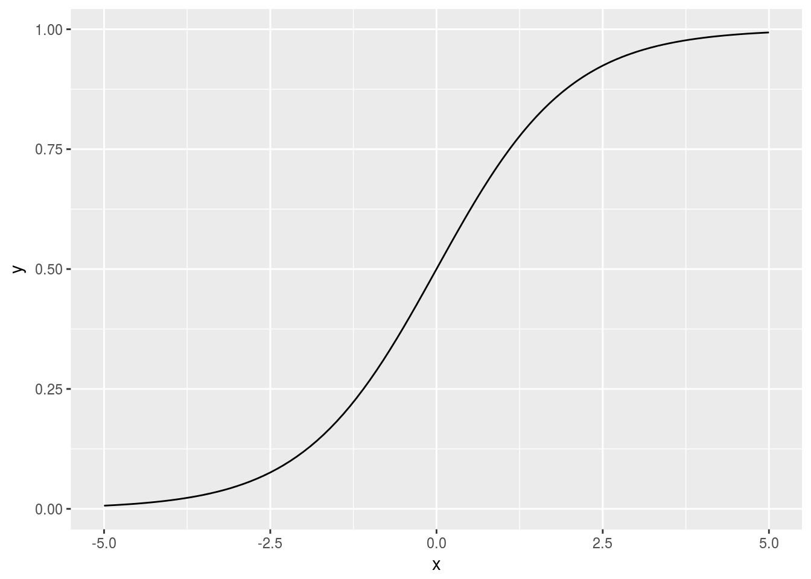
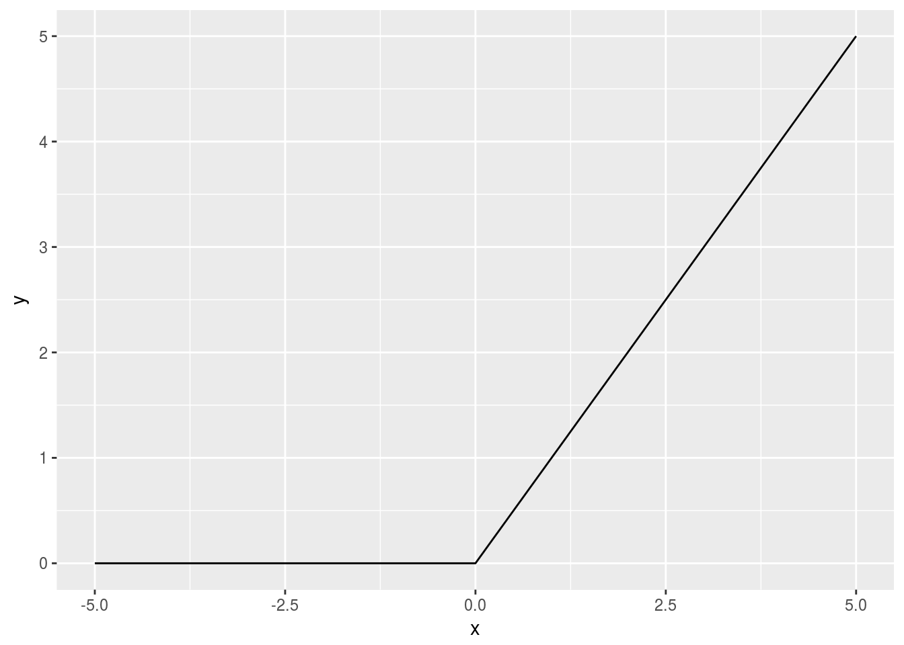
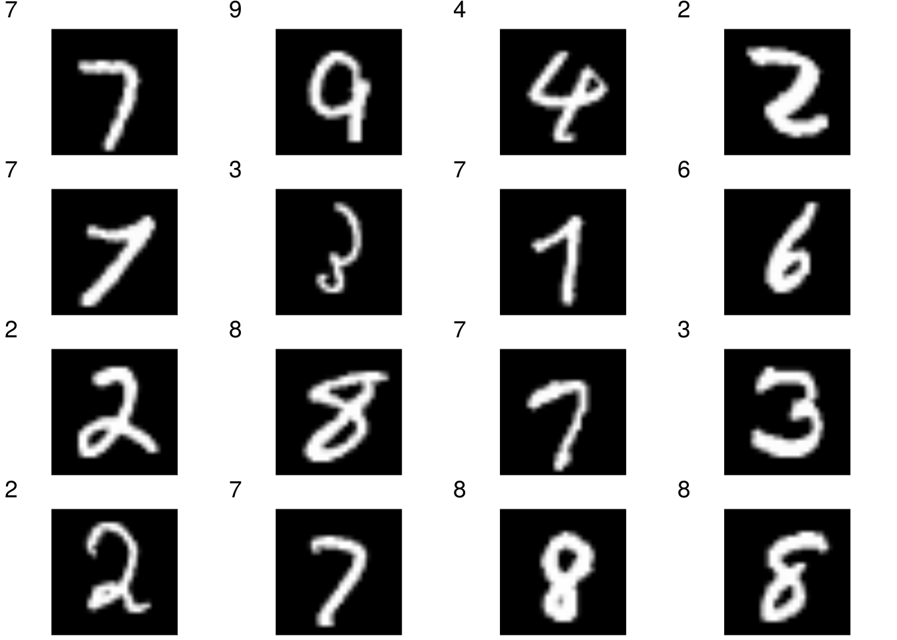
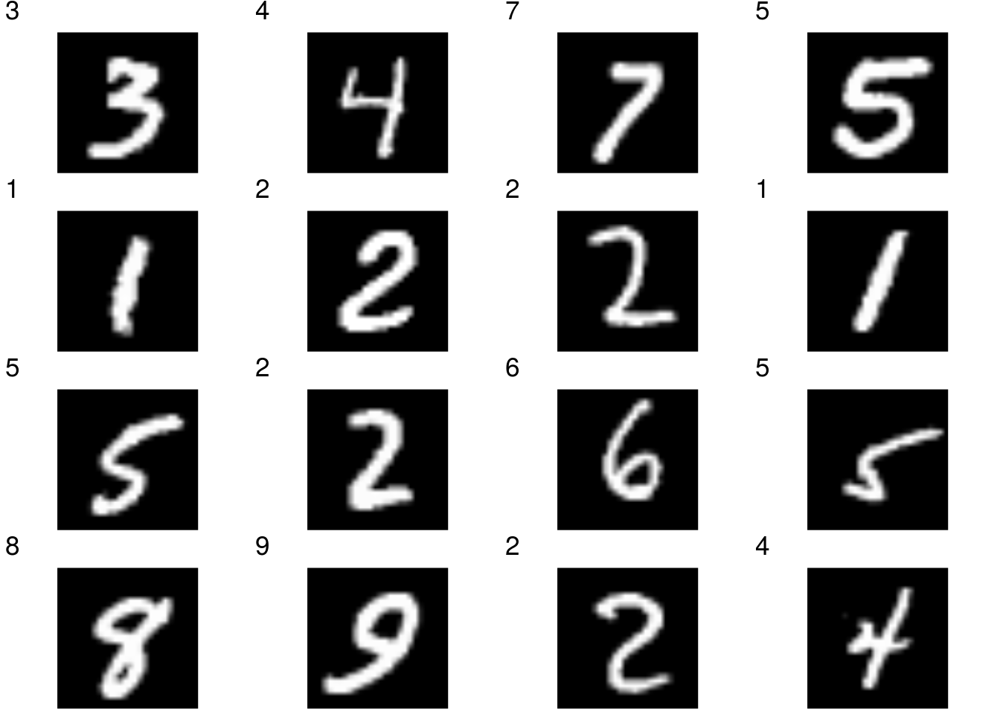

3 Neural Network
This chapter corresponds to Chapter 3, “Neural Network” in the original book.
3.1 Activation functions
3.1.1 Step function
library(ggplot2)
step_func <- function(a) { as.integer(a > 0) }
x <- seq(-5, 5, 0.1)
y <- step_func(x)
qplot(x, y, geom="line")3.1.2 Sigmoid function
sigmoid <- function(a) { 1 / (1 + exp(-a)) }
x <- c(-1, 1, 2)
sigmoid(x)## [1] 0.2689414 0.7310586 0.8807971x <- seq(-5, 5, 0.1)
y <- sigmoid(x)
qplot(x, y, geom="line")
3.1.3 Rectified Linear Unit (ReLU)
relu <- function(a) { pmax(0, a) }
x <- seq(-5, 5, 0.1)
y <- relu(x)
qplot(x, y, geom="line")
3.2 Array manipulation
Python’s shape corresponds to R’s dim function. There is no ndim counterpart in R; Use length(dim(A)). We use array instead of c to make a 1d-array. Doing so we can apply dim function.
A <- array(1:4)
length(dim(A))## [1] 1dim(A)## [1] 4B <- matrix(c(1:6), nrow=3, ncol=2, byrow=TRUE)
B## [,1] [,2]
## [1,] 1 2
## [2,] 3 4
## [3,] 5 6length(dim(B))## [1] 2dim(B)## [1] 3 23.2.1 Dot product
Dot product is calculated by the %*% operator.
A <- matrix(1:4, nrow=2, ncol=2, byrow=TRUE)
dim(A)## [1] 2 2B <- matrix(5:8, nrow=2, ncol=2, byrow=TRUE)
dim(B)## [1] 2 2A %*% B## [,1] [,2]
## [1,] 19 22
## [2,] 43 50A <- matrix(1:6, nrow=2, ncol=3, byrow=TRUE)
dim(A)## [1] 2 3B <- matrix(1:6, nrow=3, ncol=2, byrow=TRUE)
dim(B)## [1] 3 2A %*% B## [,1] [,2]
## [1,] 22 28
## [2,] 49 64Also convenient would be crossprod and tcrossprod functions. crossprod(A, b) = t(A) %*% B and tcrossprod(A, B) = A %*% t(B).
crossprod(t(A), B)## [,1] [,2]
## [1,] 22 28
## [2,] 49 64tcrossprod(A, t(B))## [,1] [,2]
## [1,] 22 28
## [2,] 49 64Size mismatch raises an error.
A <- matrix(1:6, nrow=2, ncol=3, byrow=TRUE)
dim(A)## [1] 2 3C <- matrix(1:4, nrow=2, ncol=2, byrow=TRUE)
dim(C)## [1] 2 2A %*% C## Error in A %*% C: non-conformable arguments3.2.2 Dot products in neural network
X <- array(1:2)
dim(X)## [1] 2W <- matrix(1:6, nrow=2, ncol=3, byrow=FALSE)
W## [,1] [,2] [,3]
## [1,] 1 3 5
## [2,] 2 4 6dim(W)## [1] 2 3X %*% W## [,1] [,2] [,3]
## [1,] 5 11 17# or equivalently
crossprod(X, W)## [,1] [,2] [,3]
## [1,] 5 11 173.2.3 Implementing 3-layer neural network
identity_func <- function(a) { a }
init_network <- function()
{
list(W1 = array((1:6)/10, dim=c(2,3)),
b1 = (1:3)/10,
W2 = array((1:6)/10, dim=c(3,2)),
b2 = c(0.1, 0.2),
W3 = array((1:4)/10, dim=c(2,2)),
b3 = c(0.1, 0.2))
}
forward <- function(network, x)
{
if (is.vector(x)) x <- array(x, dim=c(1, length(x)))
a1 <- x %*% network$W1 + network$b1
z1 <- sigmoid(a1)
a2 <- z1 %*% network$W2 + network$b2
z2 <- sigmoid(a2)
a3 <- z2 %*% network$W3 + network$b3
y <- identity_func(a3)
y
}
network <- init_network()
x <- c(1, 0.5)
y <- forward(network, x)
y## [,1] [,2]
## [1,] 0.3168271 0.69627913.3 Output layer
softmax <- function(a)
{
C <- max(a)
exp_a <- exp(a-C)
exp_a / sum(exp_a)
}
a <- c(0.3, 2.9, 4.0)
y <- softmax(a)
y## [1] 0.01821127 0.24519181 0.73659691sum(y)## [1] 13.4 MNIST
Run scripts for defining the mnist data loader and image plot helper functions.
source("mnist.R")
source("helpers.R")d <- load_mnist(normalize=TRUE, flatten=FALSE, one_hot_label=FALSE)
str(d)## List of 4
## $ train_img : num [1:60000, 1:28, 1:28] 0 0 0 0 0 0 0 0 0 0 ...
## $ train_label: int [1:60000] 5 0 4 1 9 2 1 3 1 4 ...
## $ test_img : num [1:10000, 1:28, 1:28] 0 0 0 0 0 0 0 0 0 0 ...
## $ test_label : int [1:10000] 7 2 1 0 4 1 4 9 5 9 ...random_plot(d$train_img, d$train_label)
random_plot(d$test_img, d$test_label)
3.4.1 Convert pickled sample weights to R data
The original book provides pre-trained network weights in the GitHub repository sample_weight.pkl. The file needs to be converted R data format to be used in R.
To do so, first, use savetxt method of numpy to save weights in text files. The python script below creates six text files: b1, b2, b3, W1, W2 and W3.
import numpy as np
import pickle
with open("sample_weight.pkl", "rb") as f:
data = pickle.load(f)
for key in data:
np.savetxt(key, data[key])Then run the following command in R to make them into a R data file.
b1 <- scan("sample-weight/b1")
b2 <- scan("sample-weight/b2")
b3 <- scan("sample-weight/b3")
W1 <- read.table("sample-weight/W1", header=FALSE, sep=" ")
W2 <- read.table("sample-weight/W2", header=FALSE, sep=" ")
W3 <- read.table("sample-weight/W3", header=FALSE, sep=" ")
W1 <- as.matrix(W1)
W2 <- as.matrix(W2)
W3 <- as.matrix(W3)
dimnames(W1) <- NULL
dimnames(W2) <- NULL
dimnames(W3) <- NULL
out <- list(b1=b1, b2=b2, b3=b3, W1=W1, W2=W2, W3=W3)
saveRDS(out, "sample_weight.rds")3.4.2 Prediction with sample network weights
get_data <- function()
{
# load and return test data
d <- load_mnist(normalize=TRUE, flatten=TRUE, one_hot_label=FALSE)
d[c("test_img", "test_label")]
}
init_network <- function()
{
# load and return network weights
network <- readRDS("sample_weight.rds")
network
}
prediction <- function(network, x)
{
if (is.vector(x)) x <- array(x, dim=c(1, length(x)))
a1 <- x %*% network$W1 + network$b1
z1 <- sigmoid(a1)
a2 <- z1 %*% network$W2 + network$b2
z2 <- sigmoid(a2)
a3 <- z2 %*% network$W3 + network$b3
y <- softmax(a3)
y
}
d <- get_data()
network <- init_network()
str(d)## List of 2
## $ test_img : num [1:10000, 1:784] 0 0 0 0 0 0 0 0 0 0 ...
## $ test_label: int [1:10000] 7 2 1 0 4 1 4 9 5 9 ...str(network)## List of 6
## $ b1: num [1:50] -0.0675 0.0696 -0.0273 0.0226 -0.22 ...
## $ b2: num [1:100] -0.01471 -0.07215 -0.00156 0.122 0.11603 ...
## $ b3: num [1:10] -0.06024 0.00933 -0.0136 0.02167 0.01074 ...
## $ W1: num [1:784, 1:50] -0.00741 -0.0103 -0.01309 -0.01001 0.02207 ...
## $ W2: num [1:50, 1:100] -0.1069 0.2991 0.0658 0.0939 0.048 ...
## $ W3: num [1:100, 1:10] -0.422 -0.524 0.683 0.155 0.505 ...One-by-one prediction.
accuracy_count <- 0
for (i in 1:length(d$test_label))
{
y <- prediction(network, d$test_img[i,])
p <- which.max(y)-1L
if (p == d$test_label[i]) accuracy_count <- accuracy_count + 1
}
cat("Accuracy:", accuracy_count/length(d$test_label), "\n")## Accuracy: 0.9352For batch prediction, we need to modify the softmax function to work for matrix input.
softmax <- function(a)
{
# a : either numeric vector or matrix of size (N, classes)
#
# returns: probability matrix of size (N, classes)
if (is.vector(a)) dim(a) <- c(1, length(a))
C <- max(a)
exp_a <- exp(a-C)
exp_a / rowSums(exp_a)
}
a <- matrix(c(3, 1, 2, 1, 2, 5), nrow=2, ncol=3, byrow=TRUE)
softmax(a)## [,1] [,2] [,3]
## [1,] 0.66524096 0.09003057 0.2447285
## [2,] 0.01714783 0.04661262 0.9362396rowSums(softmax(a))## [1] 1 1Also, prediction function needs to be revised due to the broadcasting rule of R.
prediction <- function(network, x)
{
if (is.vector(x)) x <- array(x, dim=c(1, length(x)))
x <- t(x)
a1 <- crossprod(network$W1, x) + network$b1
z1 <- sigmoid(a1)
a2 <- crossprod(network$W2, z1) + network$b2
z2 <- sigmoid(a2)
a3 <- crossprod(network$W3, z2) + network$b3
a3 <- t(a3)
y <- softmax(a3)
y
}Batch prediction.
batch_size <- 100
accuracy_count <- 0
for (i in seq(1, length(d$test_label), batch_size))
{
index <- i:min((i+batch_size-1), length(d$test_label))
y <- prediction(network, d$test_img[index,])
p <- apply(y, 1, which.max) - 1L # one-base index
accuracy_count <- accuracy_count + sum(p==d$test_label[index])
}
cat("Accuracy:", accuracy_count/length(d$test_label), "\n")## Accuracy: 0.9352